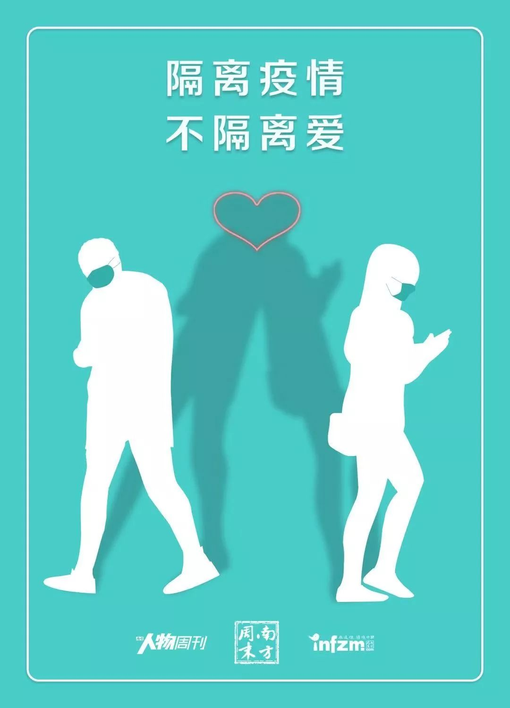
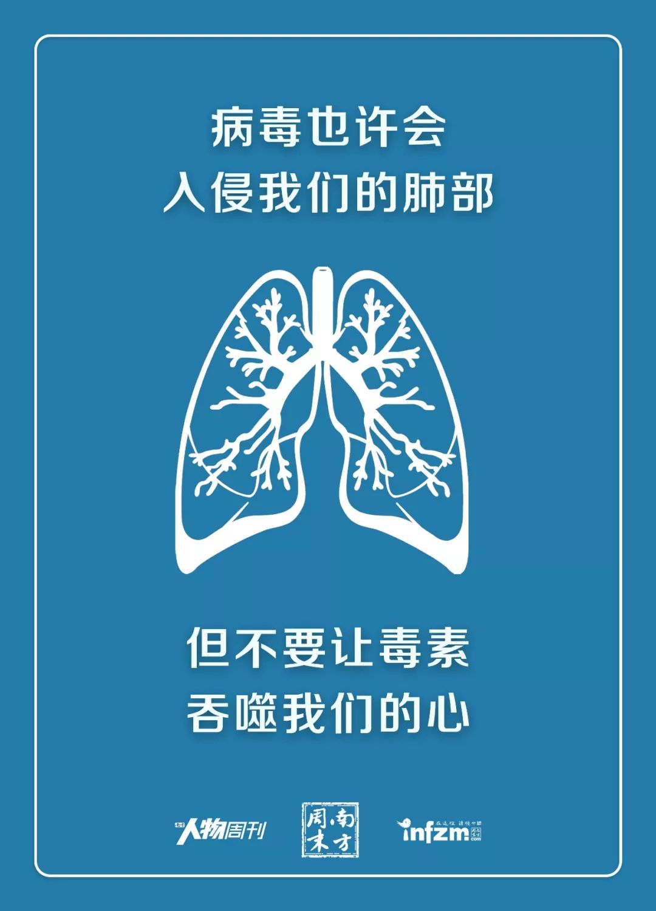
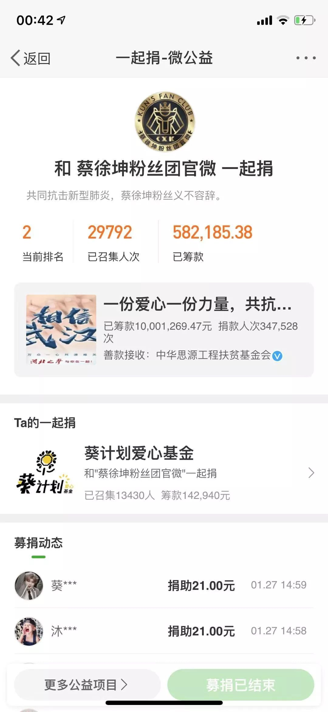
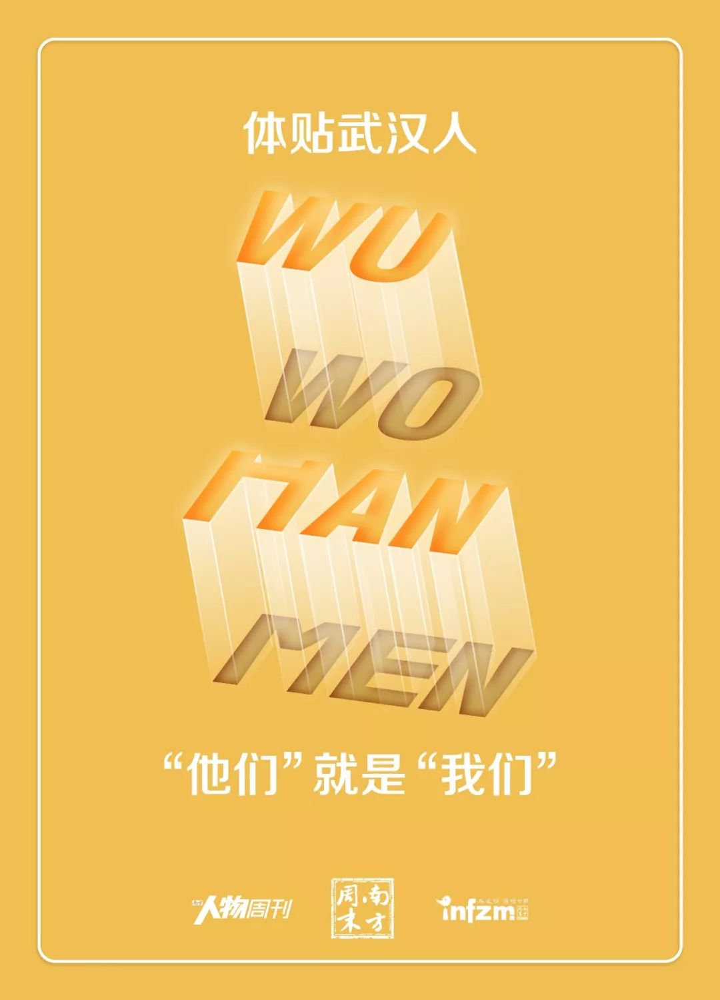
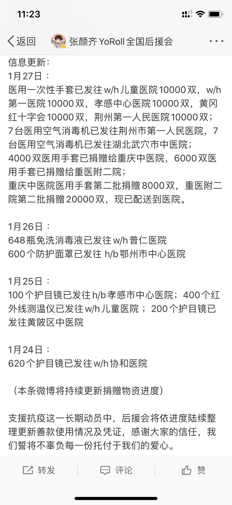

口罩为什么会短缺？
原文链接 备份链接 《人物》记者向多位寻求捐赠的医护人员咨询，他们均表示，很多医院的医用外科口罩库存量大概在一个星期左右，「平常有时口罩也戴一天，如果不去视察病房，有的科室没有戴口罩的需求。」用得不多、存量少，脆弱的库存和供应系统很快被疫 …
你以为他们只会追星？他们从线上到线下的组织力，非常时刻竟很亮眼
粉丝团成员大多是二十岁上下的年轻人，这是他们第一次面临真正的危情时刻
本文首发于南方人物周刊
文 | 本刊记者 张明萌 实习记者 梁翰文
编辑 | 周建平 蒯乐昊
全文约4926字，细读大约需要12分钟

1月21日晚，“能量中国官方”微博发布：朱一龙公益应援个站携手能量中国、联劝公益启动紧急公益活动，紧急采购20万份口罩、20万份一次性消毒棉片、1000瓶洗手液支援湖北。自此，各家粉丝后援会开始组织、号召粉丝抗击疫情。通过捐款、捐物等方式向湖北乃至全国资源紧缺的地区提供支援。
饭圈的优势在此时展露：粉丝团人数巨大，因某位明星聚集成群，认同感强烈，彼此信任。粉丝团管理架构中，内部分工明确，具有强大的协同能力。对于组织线上能力游刃有余的粉丝团管理者而言，此次抗击疫情更像是平日活动的一次复刻。当饭圈遇见疫情，用于追星的组织方式，发挥了意想不到的作用。
蔡徐坤粉丝团官微、朱一龙公益应援个站、张颜齐YoRoll全国后援会成员，各自对我们讲述了他们从疫情开始所做出的决策与行动。以下为他们的口述。

蔡徐坤粉丝团官微：你可以理解为这种沟通是一种长期默契

我们一直都关注疫情，官方粉丝团里有位主要管理人员是医护人员，昨天已经去支援武汉了。
抗击疫情至今，我们主要发起了两个项目。第一个是我们最开始以官方粉丝团的名义联系渠道捐了一批物资，1月23日，我们看到武汉的同济医院和协和医院披露了物资短缺的消息，并公布了物资接收途径，我们“皮下出资”（指官微之下的工作人员自行出资）9960元采购了3000个口罩。其实那天口罩已经开始脱销了，我们调配了不同的资源，最终通过顺丰运送到医院。
我们的粉丝非常关心疫情，私信我们一些需求，他们希望不仅官方粉丝团做，也能带着粉丝们一起做。每个人能力很小，但是汇聚起来就能够为共同抗击疫情做一些事情。
蔡徐坤超话签到的人数有几百万，他的微博关注人数有2700万，官方粉丝团微博也有三百多万粉丝，下面的十几个分团，过去的活动中，常常有线上和线下的联动。疫情发生之后，我们认为，粉丝团官微需要第一时间起示范和带头的作用。
这个是不需要商量的，也不需要统计大家的意见，大家的情绪都在这里的，大家的意愿都在这里，但是你一定要先做出第一步，我们先做，我们做完之后，事实上确实起到了比较好的一个带动作用。粉丝开始给我们留言，开始在微信、微博的管理群里面跟我们说，能不能再跟着你们做一些更大的事情？我们能不能一起去捐款？
他们提出诉求之后，我们开始去线上寻找有什么样的项目能够适合我们操作，并保证捐款落实。
大家通过线上的平台的方式，我们看到的是“蔡徐坤粉丝团官微发起一起捐”，捐款数字、人数都能看到，很透明，这对粉丝也是一个很好的反馈。
这个行动，官方粉丝团没有与下面粉丝分团、也没有与粉丝们沟通，我们发布，他们自发跟上来了。你可以理解为这种沟通是一种长期默契。你不会真的去发一个调查问卷说做不做。我们有十几个大的微博粉丝群，每个群都是几千人，还有很多微信群，从23号开始我们就已经收到了大量粉丝的诉求，我们就知道这个事情可以做。一般的项目确我们可能会考虑发起了之后没人来、会不会有问题，但是在当时的环境下，所有的人众志成城。你知道这个事情是你不论考虑是300人参与，还是1万人参与，还是5000个人参与，这都应该做的事情。
23、24号，我们已经决定要做捐款，但当时平台比较少，我们想等待一个更成熟的机会。我们开始了第二个项目——通过新浪微公益“一起捐”活动发动召集，粉丝参与，活动开始一小时就召集了超过一万人。三天后活动结束，29892人捐赠超过58万，加上我们官方粉丝团最先捐赠的一万，差不多60万。
为什么我们能够一个小时召集一万多人？我们跟粉丝有微博群、微信群，我们做了一件事情发了微博，瞬间每一个粉丝群都会收到。信息扩展非常快，这都是我们的毛细血管。我们粉丝团体更多是线上的形式去组织，面对这次疫情，捐助、捐款都是我们习惯的方式，我们能够很好地传递信息、调动我们的群。
我们官方粉丝团团队核心的人不多，具体数字不方便讲。每个人有不同的分组，你可以理解为部门的概念，有各自的职能，比如有的负责制图并发布。
群里面肯定也有各种情绪，比如感冒了发烧了，各种甲流都有，开始恐慌了，群友们也会进行心理疏导。这些都由一个大的组织架构区管理，细致的事情每时每刻不断发生。

蔡徐坤粉丝团官微发起“一起捐”活动
追星像一个兴趣爱好小组，大家都为了同一种兴趣爱好到这里来了，有共同的交流基础。进粉丝群要经过审核，我们有群规，有一些约定俗成的规则，有相应的处理方式，这些维持粉丝群的有效运转。粉丝们在这里面彼此信任度很高，是一个更具有粘性的信息分享的渠道和社群。
群里会有管理人员，更了解我们的文化，我们管理这些群管理员，群管理员去再去管理这些群，一对多，这样扩散下去，才能去管理这么大一个机构。
实质上大家都是粉丝，大家都是网友，很平等，但他对你要有一个基础信任。当你去做一件事情，这也是他想做的事情，他就会跟你一起做。
这种捐赠行为和平时去打投、刷超话在组织架构上其实没有本质区别，这就是一个兴趣社区，我们强迫不了任何人，也没有任何人会被我们强迫。在网络世界里，但大家首先有一个判断。
我们作为官方的粉丝团，发起活动，接下来就百花齐放。比如蔡徐坤的粉丝，这两天联系到有医疗器械生产和经营许可证的专业厂家，加班加点生产口罩。大家都在尽自己努力去做事情。我们的目标并不是宣传，而是真正地去做事。
接下来我们也在想，除了捐款，我们还能做什么？现在各种社会力量进入，理论上钱可能不是目前最缺的，有可能缺一些有效调配，有可能会存在整体不缺、局部缺的情况。另外，我们也会去关注大家的心理状况。

朱一龙公益应援个站：粉丝回归现实，我们也都是普通人
我们是朱一龙粉丝组成的公益个站，是由散粉组织的。因为朱一龙先生本身是武汉人，所以粉丝们对武汉的关注会高一些。
疫情发生后，大家非常想了解武汉情况怎么样，想做一些力所能及的事情。当时粉丝私信比较多，都在问我们要不要去做这个公益？决定做了之后，我们也就开始发微博紧急联系，选择合作平台。“聚沙成塔，健康湖北特别活动”就是这么组织起来的。
我们先去找厂家订物资，订好之后算大概需要多少钱，再发动筹款。按我们的计划是，筹集16万元，购买20万只口罩、20万个酒精棉片和1000瓶洗手液，但因为网络延迟，最终收到了17万多（具体数字为178286.26元）。后来我们把多出来的钱和因现实状况没有采购到的酒精棉片的钱加在一起，又买了10万个口罩。当时武汉商店中的口罩大部分已经售空。我们和平台一起跟供应商进行联络和沟通，从能量中国平台微博发布的活动反馈里可以看到，这次总共联络了19家企业，最终选择了两家供货。我们共捐助了30万个口罩，9万片酒精棉片，2000瓶洗手液。1月22日起，陆续发出。

@能量中国官方 发布朱一龙公益应援个站资金使用情况
我们站一直都在做公益，有一个成熟的系统，这套系统在这次疫情中帮助我们我们更快速的执行。筹款活动发起后，粉丝积极响应，二十分钟多一点活动就已经结束了，因为已经达到目标额了。
我们采购的口罩是普通的医用口罩，酒精棉片和口罩，主要发给铁路局，由他们分发给志愿者、工作人员和群众，洗手液分发到火车站等公共场合。
在采购过程中，针对金额往来，我们做了什么都会及时更新，有详细的账目，资金流向清晰，支出结余也会有明确的标注。包括能量中国微博在这次活动的反馈中也具体写了资金的流向。
我们这次参与的有五六个人，有人负责筛选厂家，有人负责谈价格，有人负责跟进。
公益活动相较于其他活动会更具体一点，首先要去计划这件事情，然后联系各方，然后实施，还要跟进反馈，这是一个完整、长期的流程。今天朱一龙先生也通过武汉慈善总会那边捐了100万，我们很多粉丝做活动也是因为……用通俗的话讲是偶像的正能量。他做这些公益，粉丝也愿意跟着做。
在这次事件中，不止朱一龙这边，各家都非常给力。很多家都参与了，这是众志成城的一件事情。粉丝回归现实，我们也都是普通人，都想往疫区送一些物资，通过这个圈子，每个人的小力量就能汇聚到一起。

张颜齐YoRoll全国后援会：都觉得追星女孩比较疯，但国家大事面前，大家都很清醒
我们从1月23号左右开始考虑捐助事宜。张颜齐有一句名言“你这个钱与其做怎么怎么，不如拿来做公益。”他直接跟粉丝这样讲，所以粉丝都对公益很上心。我们有个单独的公益组织，但因为这次事情比较严重，只靠公益组织的力量不太够，我们后援会直接开了链接，专门处理，粉丝们自发就捐款了。由官方后援会这边统一来分配和支出。
我们以往做公益有很多种形式，也做过不需要大家筹款的，我们分享一个渠道，大家自发的往渠道里面打钱，直接捐实物的形式也有。
这次这么做，不光是我们，各家都会组织去筹钱，有的是自己想办法去买物资，有的是直接把这个款捐出去。我们考虑到粉丝个人力量不够大，钱汇总到一起，我们统一去安排，可以避免物流等资源的浪费。
很多医院不需要钱，直接要物资，我们就到处找物资捐过去，这比直接捐钱帮助更大一点。医疗物资到处都紧缺，比如防护服，医用专业口罩，我们通过各种方式，比如淘宝、阿里巴巴……粉丝也会有一些资源能找到这些物资。我们再去跟物资方跟进、沟通，核查物资规格、是否符合医疗使用标准？然后交医院审核，医院觉得符合他们使用规格，我们才能去买。
我们没有固定的规则说谁去负责某一项物资，都是具体问题灵活安排，这个人正好谈这一项，下一个人就去接手另一项，群里及时沟通。这几天大家每天抱着手机，打电话、发微信，到底要沟通些什么，大家都已经熟练了。
刚开始遇到不少困难，说实话，我们这些粉丝，也就是20来岁的小女孩，也不熟悉医疗厂商，不了解运输渠道，都是摸索。我就问我在医院工作的亲戚，医疗器械在哪儿买。粉丝有亲戚在医疗系统工作的也会提供信息。大年三十晚上，我打了好多电话，都说没有货，工人放假了，有的说，订单都排到三月份了。你打了20个电话，可能只有3个能回复你了，3个里面，最后又只有1个能谈下来。我们就是这样大海捞针地去找。
这几天我们过了最有意义的一个年，大年三十晚上，我给协和医院负责人打了半个多小时电话才打通，我跟他讲，我们这边找到了多少个护目镜，问医院需不需要？医院负责人一直在谢我，说祝你们新年快乐！我当时就觉得特别不是滋味。人家医生还要感谢我，还要祝我新年快乐，我只是给他打个电话，但他们其实承担得更多。
大家可能都觉得追星女孩比较疯，但其实国家大事面前，大家都很清醒、很理智。我们肯定不能添麻烦，能帮上就帮。
说实话，我们这个后援会，在张颜齐面前从来都是零存在感的那种，他从来没有关注过我们，我们是两个独立的世界。但是我们发了第一次更新资源的物资微博，他第一次跟我们有了互动，我们很激动，去找资源的冲劲也更大。
我们后援会目前已募集到武汉专项爱心资金317923元。在各方帮助下，已联系协调好符合相应卫生标准的物资有：医用一次性外科口罩10万个、医用一次性乳胶手套14000个、医用一次性帽子1万个、护目镜740个、红外线测温仪400个、医用一次性手术衣1000个。款项90%多都已经用掉了，但有的还没发出来，有的还没收到，所以完整的资金支出还没有出来，但是最后我们也都会全部公示。

张颜齐粉丝后援会物资记录
跟进物资是我们目前最主要的任务。有一些还没有发货，或者是还没有及时更新的商家，我们去催，有些医院已经收到了我们的物资，我们也在跟他们确认，希望能给我们返一个图，我们好给粉丝看一下，说明我们物资确实已经到位了。
号召大家捐款、去购买物资，跟我们平时去打投，或者去刷超话，出发点就完全不一样了。公益是很纯粹的一个想法，你不会去想我们要捐的比别人家多，没有攀比的心情，纯粹是为了帮助别人。打投有竞争，我们支持的明星和别的粉丝团支持的明星在同一个榜单上是谁更靠前，我们会去比这个。但是这种购买物资，可能我们买完之后商家还有货，但我们钱已经不够了，我们也会把渠道分享给其他粉丝团，如果大家一起助力，是非常好的一件事。
这次疫情我们这种粉丝团被关注到，可能是因为我们确实在做事，但也可能是因为粉丝团沾了明星的光，处在一个可以被看到的地方，粉丝会自豪，会分享。不一定是我们做的多好，只是我们更多地被看见了。但只要做就好了，看不看见，不是最重要的。
新型冠状病毒感染的肺炎专题：


征集疫区真实故事，记录我们的命运
《南方人物周刊》现面向所有新冠肺炎一线的读者征稿，写下你正在经历或亲眼所见的故事。如果你是一线医护人员或其家属，疫区公共服务人员，病患本人或家属，专业人士等等，如果你有故事、有困难、有建言，请让我们知道。我们也同时征集采访对象和新闻线索，留下你的联系方式，我们的记者会同您联系。我们会充分保护受访者的隐私。
隔离疫情，但不隔离爱。写出你的真实故事，你的困境和希望，记录我们共同的命运，围城内外携手共度。
此次征稿形式不限：文字（2000字左右）、图片（原创拍摄）、音频视频（原创录制）
祝愿所有在疫区和不在疫区的朋友们，新春快乐，平安健康。
投稿方式：
1、记者热线（同微信）：13918532564、13631483936
2、《南方人物周刊》微信公号投稿邮箱：wuhantingzhu@126.com
3、《南方人物周刊》官方微博讨论话题：#我在疫区有话说#
注：请务必保证投稿内容的真实、客观、理性，不造谣，不传谣。
原文链接 备份链接 《人物》记者向多位寻求捐赠的医护人员咨询，他们均表示，很多医院的医用外科口罩库存量大概在一个星期左右，「平常有时口罩也戴一天，如果不去视察病房，有的科室没有戴口罩的需求。」用得不多、存量少，脆弱的库存和供应系统很快被疫 …
原文链接 备份链接 自新型肺炎疫情爆发以来，湖北乃至全国多个省份的医院因防疫物资短缺，向社会发出求助。而另一种声音却在说防疫物资是充足的，没有短缺。一时之间，防疫物资成为了薛定谔的猫。 今日来信的这位作者，便是自发为一线医院筹集防疫物资的 …
原文链接 备份链接 医疗防护资源不足是常态，各地资源调配需平衡，“灯下黑”区域渐次光亮，但少数地区的疫情宣传依旧不到位 外地务工返乡者最担忧的问题是年后经济收入断流、地域歧视，担心节后可能无法返工 本文首发于南方人物周刊 文 | 本刊记 …
原文链接 备份链接 【财新网】（记者 黄蕙昭 综合）新型冠状病毒肺炎防控战“全国总动员令”终于落地：今日，中共中央政治局常务委员会召开会议，决定成立应对疫情工作领导小组，向湖北等疫情严重地区派出指导组。 “总动员令”之下，武汉肺炎防控 …
原文链接 备份链接 关注并星标消费新声 不错过泛消费任何最新动态 尤其在近十年，尽管国际形势时有起落，但两国的经济和民间交流正在不可逆地粘连到一起，相似的传统文化背景让我们之间形成对照，成为几乎不可能被斩断的近邻。 作者 | …